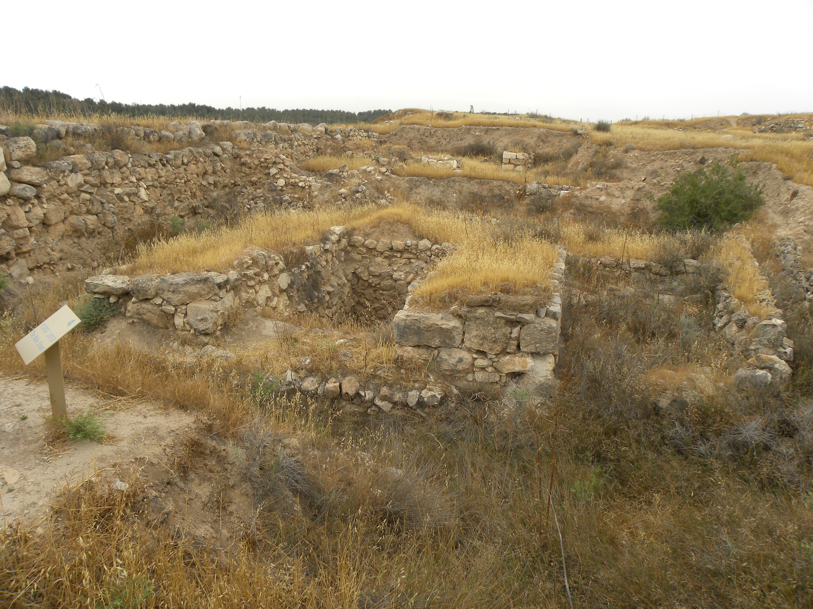

Lachish (Ancient City)

Judah's second city after Jerusalem, a heavily fortified mound city in the Shephelah guarding the pass up to Jerusalem. Excavations exposed a massive fortified gate, a palace-citadel, city walls on a glacis, and — uniquely in the ancient Near East — the Assyrian siege ramp of 701 BC still standing against the south-west corner: about 25,000 tons of stone, with a paved upper surface for battering rams, matched by a defenders' counter-ramp inside. Arrowheads, sling stones and helmets from the assault were found in the ramp debris. This entry covers the city, gate and siege works only; the Lachish Reliefs, Lachish Letters and Eliakim seal impressions have their own entries.
Interpretations
The identification of the ramp with Sennacherib's 701 BC siege ramp is widely accepted, supported by its correspondence with the Lachish Reliefs (five battering rams abreast fit its width) and by the Level III destruction. Debate concerns details of the reliefs' accuracy (whether the artist witnessed the siege) and the phasing of the palace and gate, not the city's identity or the 701 BC destruction.
Scripture Illuminated
Biblical Significance
Lachish is where Sennacherib's invasion becomes archaeology: the city 2 Kings 18 and 2 Chronicles 32 name as his headquarters, taken while Jerusalem held. The ramp is the war of Isaiah's lifetime in stone — an empire's engineering against a Judahite wall — and the gate above it is where the Lachish Letters' commander watched the last signals before the Babylonian fall a century later.